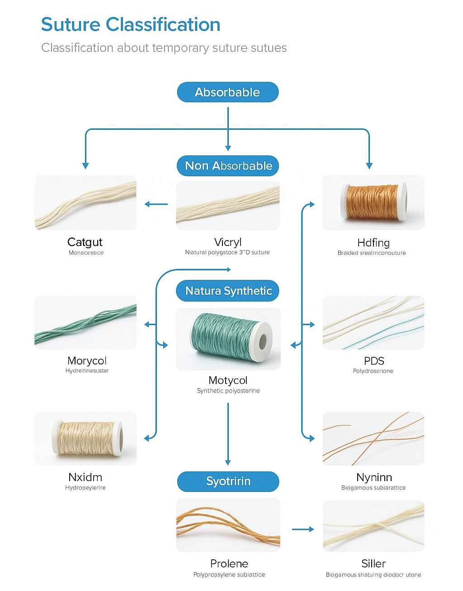

Suture Classification System
Sutures are classified based on absorbability, material origin, and filament structure
Absorption Timeline Comparison
Understanding how long different sutures maintain their strength
Detailed Suture Profiles
Plain Catgut
Natural Absorbable
Absorbable
Material:
Natural collagen from sheep/bovine intestinal submucosa
Structure:
Twisted multifilament
Absorption:
70 days (proteolytic enzymatic degradation)
Tensile Strength:
7-10 days
Applications:
Internal soft tissue
Ligation
Pediatric surgery
Advantages:
Excellent handling
Low cost
Good knot security
Disadvantages:
High tissue reactivity
Unpredictable absorption
Capillary action
Chromic Catgut
Natural Absorbable (Treated)
Absorbable
Material:
Collagen treated with chromium trioxide solution
Structure:
Twisted multifilament
Absorption:
90 days (delayed enzymatic degradation)
Tensile Strength:
10-14 days
Applications:
Internal soft tissue
Ligation
Oral surgery
Advantages:
Longer lasting than plain
Better tensile strength
Improved handling
Disadvantages:
Still tissue reactive
Unpredictable absorption
Capillary action
Polyglactin 910 (Vicryl)
Synthetic Absorbable
Absorbable
Material:
Copolymer of glycolide and lactide (90:10 ratio)
Structure:
Braided multifilament with coating
Absorption:
56-70 days (hydrolysis)
Tensile Strength:
21-28 days (75% at 14 days)
Applications:
Soft tissue approximation
Subcutaneous closure
General surgery
Advantages:
Predictable absorption
Excellent handling
Coated for smooth passage
Good knot security
Disadvantages:
Braided - infection risk
Some tissue drag
Poliglecaprone 25 (Monocryl)
Synthetic Absorbable
Absorbable
Material:
Copolymer of glycolide and epsilon-caprolactone
Structure:
Monofilament
Absorption:
91-119 days (hydrolysis)
Tensile Strength:
14-21 days (50-60% at 7 days)
Applications:
Subcuticular closure
Soft tissue approximation
Plastic surgery
Advantages:
Monofilament - low infection risk
Excellent handling and pliability
Minimal tissue reaction
Good for cosmetic areas
Disadvantages:
Higher cost
Requires secure knotting
Some memory
Polydioxanone (PDS)
Synthetic Absorbable
Absorbable
Material:
Polyester polymer (poly-p-dioxanone)
Structure:
Monofilament
Absorption:
180-210 days (hydrolysis)
Tensile Strength:
42-56 days (74% at 14 days)
Applications:
Fascial closure
Pediatric cardiovascular
High-tension areas
Advantages:
Long-term strength retention
Minimal tissue reaction
Monofilament - low infection
Excellent for fascia
Disadvantages:
Stiff handling
Higher cost
High memory
Difficult knot tying
Silk
Natural Non-absorbable
Non-absorbable
Material:
Natural protein fiber from silkworm cocoon
Structure:
Braided multifilament
Absorption:
Non-absorbable (permanent)
Tensile Strength:
Permanent
Applications:
Ligation
Tying drains
Non-cutaneous applications
Advantages:
Excellent handling
Superior knot security
Low cost
Smooth tie-down
Disadvantages:
High tissue reactivity
Capillary action
Infection risk
Not for skin closure
Nylon (Ethilon)
Synthetic Non-absorbable
Non-absorbable
Material:
Polyamide polymer
Structure:
Monofilament
Absorption:
Non-absorbable (minimal hydrolysis over years)
Tensile Strength:
Permanent (minimal loss over time)
Applications:
Skin closure
Microsurgery
Cosmetic procedures
Advantages:
Low tissue reactivity
Smooth tissue passage
Good tensile strength
Excellent for skin
Disadvantages:
High memory
Knot slippage risk
Stiff handling
Requires more throws
Polypropylene (Prolene)
Synthetic Non-absorbable
Non-absorbable
Material:
Isotactic crystalline stereoisomer of polypropylene
Structure:
Monofilament
Absorption:
Non-absorbable (permanent)
Tensile Strength:
Permanent
Applications:
Cardiovascular surgery
Hernia repair
Skin closure
Tendon repair
Advantages:
Minimal tissue reaction
High tensile strength
Excellent biocompatibility
Smooth passage
Disadvantages:
High memory
Knot security issues
Expensive
Difficult handling
Polyester (Ethibond)
Synthetic Non-absorbable
Non-absorbable
Material:
Polyethylene terephthalate (polyester)
Structure:
Braided multifilament with coating
Absorption:
Non-absorbable (minimal over years)
Tensile Strength:
Permanent
Applications:
Cardiovascular surgery
Orthopedic procedures
Tendon repair
High-tension areas
Advantages:
Very high strength
Excellent handling
Coated options available
Superior knot security
Disadvantages:
Braided - infection risk
Tissue drag
Permanent foreign body
Higher cost